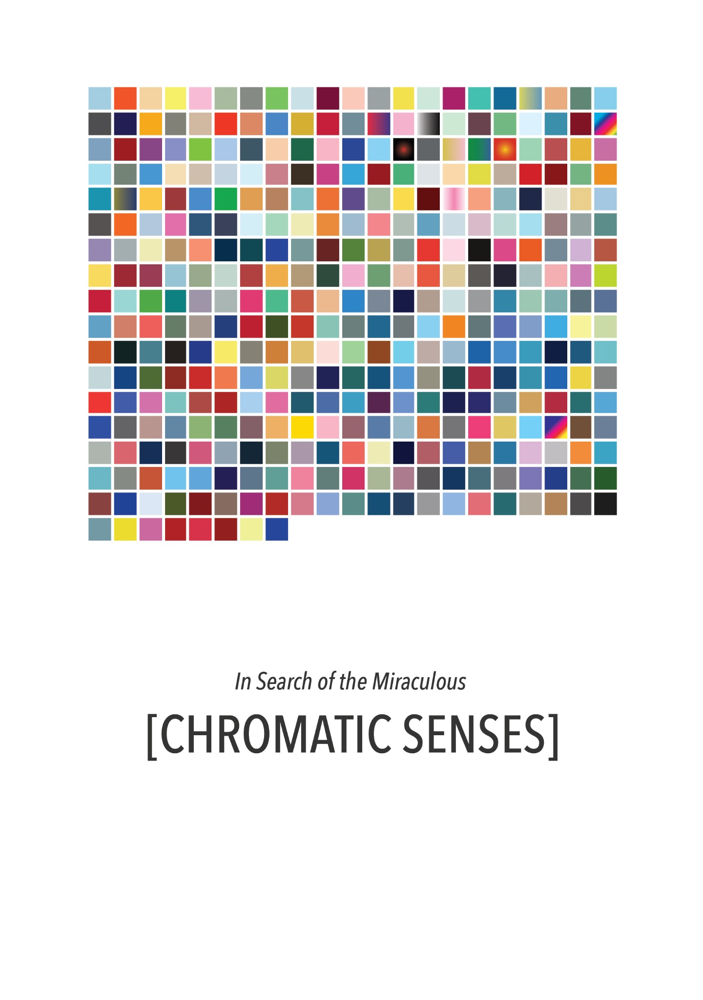
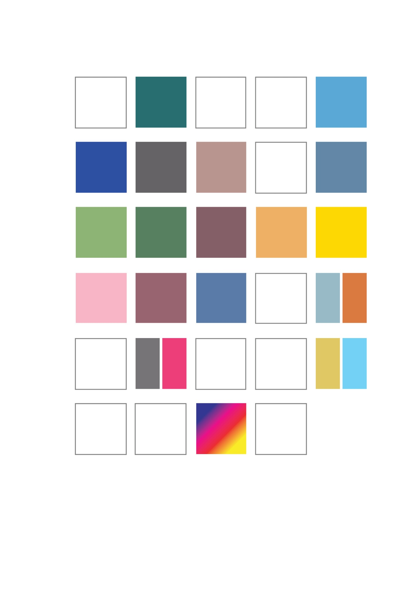
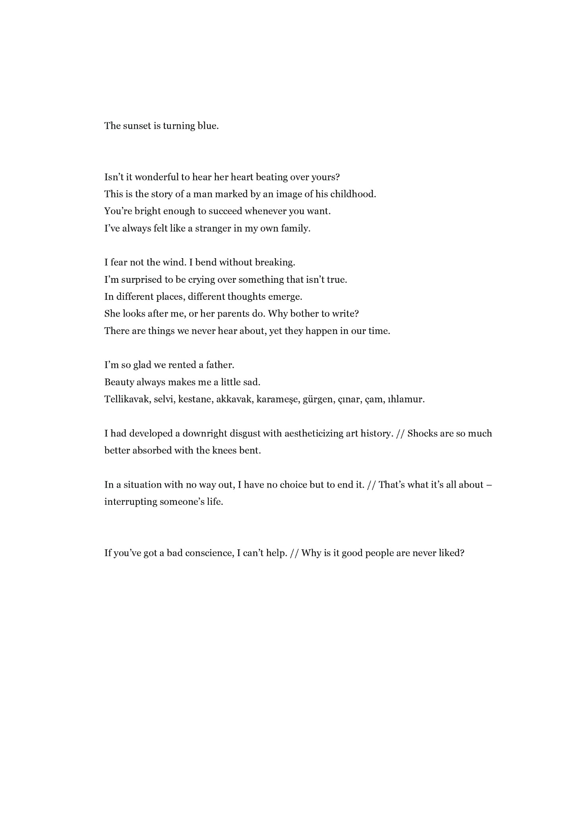
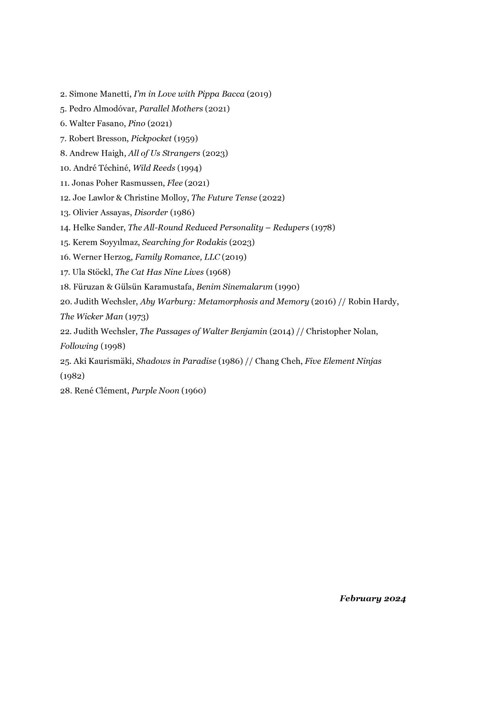
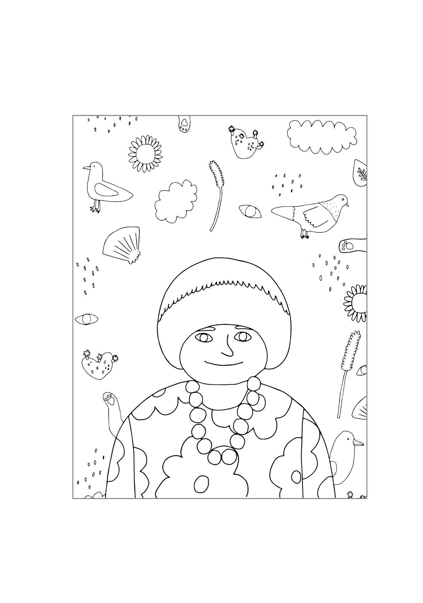
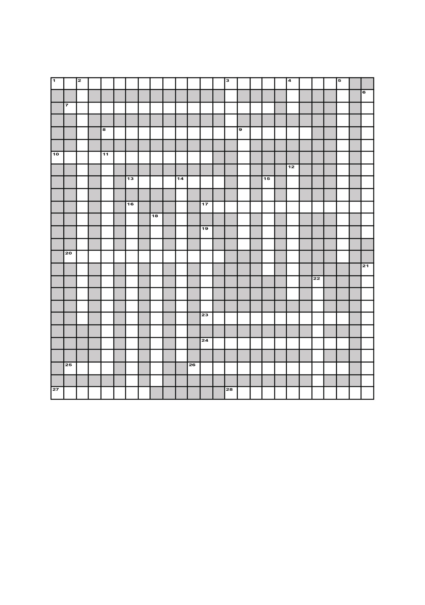

Chromatic Senses
2022–2024Chromatic Senses is an artist’s calendar composed between January 2022 and August 2024. Conceived around the viewing of 365 films, the volume replaces the conventional measure of time with a sequence of colours and quotations derived from each film. Days without films are left blank to be coloured in, while multiple films share the same date. The volume also includes film-inspired colouring pages and a crossword puzzle.





